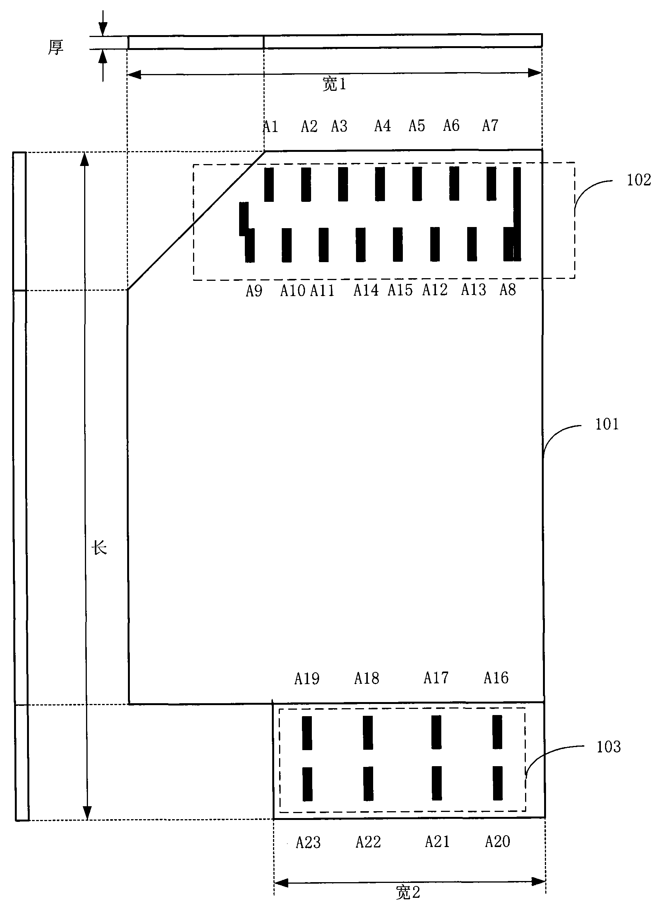

发明名称--一种具有高速高兼容性的闪存卡
| 申请号 | CN200820079840.1 | 申请日 | 2008.04.09 | ||
| 公开（公告）号 | CN201174247Y | 公开（公告）日 | 2008.12.31 | ||
| IPC分类号 | G11C7/10 | 申请（专利权）人 | 普天信息技术研究院有限公司; | ||
| 发明人 | 杨光敏;曹会扬; | 优先权号 |
摘要:
本实用新型公开了一种具有高速高兼容性的闪存卡，所述闪存卡的卡体上具有可连接多媒体存储卡(MMC)/安全数据记忆卡(SD)接口槽的第一接口，以及可连接通用串行总线(USB)接口槽的第二接口。本实用新型提出的闪存卡同时具有可兼容MMC/SD接口的第一接口，以及可兼容USB接口的第二接口，并且支持16位的MMC/SD接口数据传输，极大提高了闪存卡的性能。
摘要附图:
